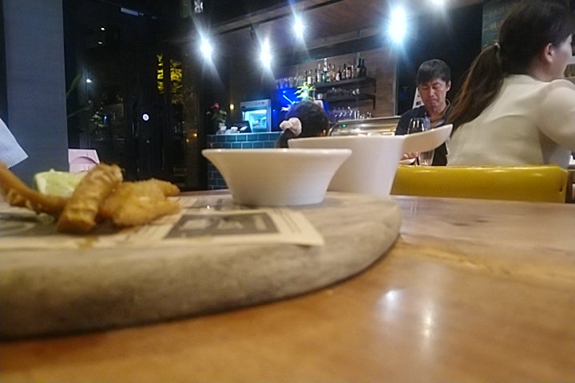
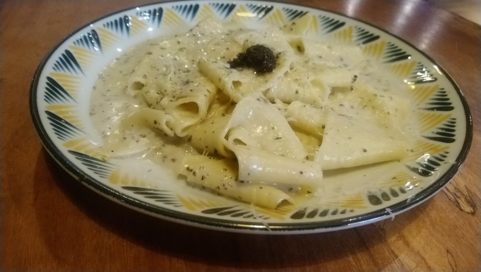
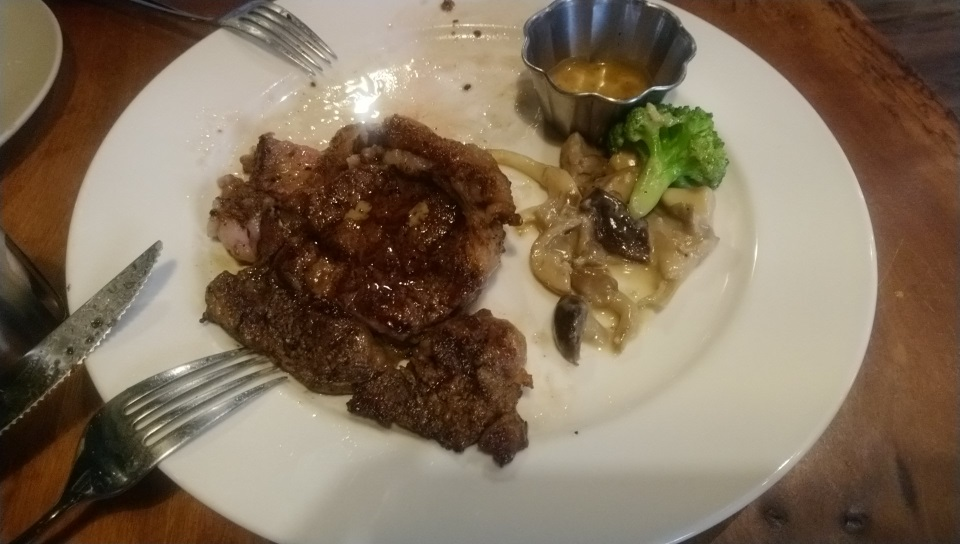

[竹北] The BBQ House 竹北店
這間BBQ House，是在新竹市站穩後，開了竹北店， 食物偏貴，但食材用的不錯，算是好吃，偶而吃一次也還不錯。
裝潢還算新!

牆壁中間有個大大的高亮度招牌，

第一次來，簡單試一下，小菜選炸牛肚，湯選了蘑菇卡布奇諾湯，

湯好喝，炸牛肚普通。
松露大寬麵

這個麵好吃。
牛排是這間店的特色，有個專門放肉的玻璃冷凍櫃， 先挑肉的種類，然後選擇重量，想吃幾克就幾克，
今天挑 紐約客牛排，其實我覺得菲力牛排太瘦， 紐約客或是莎朗這種帶點油花，帶點筋的比較好吃。

主廚蠻會煎的，直接吃就不錯了，沾他附的牛排醬汁也不錯， 我試著用桌上的玫瑰鹽，感覺並沒有比較好吃。